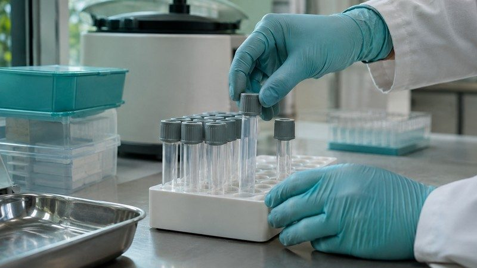
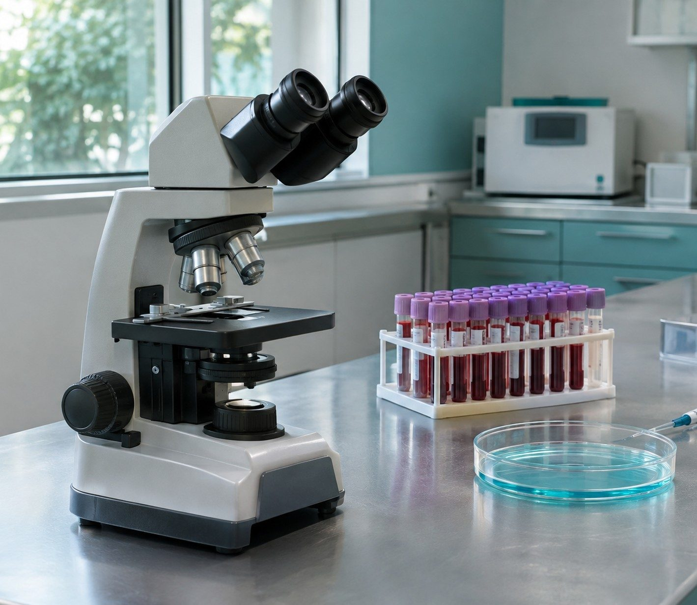

면역세포 치료
면역세포 치료 상담 절차를 안내합니다.
면역세포 치료 상담 절차를 안내합니다.
상담 순서, 준비 자료와 방문 전 문의 사항을 안내합니다.
면역세포 치료 상담
상담 예약, 자료 준비, 방문 일정과 비용 문의 방법을 확인해 주세요. 진료 관련 판단은 담당 의료진과 상담해 주세요.


상담 자료
현재 진료 중인 의료기관, 진행 중인 치료, 예정된 검사와 방문 날짜를 정리해 주세요. 기존 진료 기록과 검사 결과가 있으면 확인 가능한 범위에서 가져와 주세요.
자료에 개인 정보가 포함되어 있으므로 접수 담당자가 안내한 전달 방법을 이용해 주세요. 공개 게시판이나 공개 댓글에는 진료 자료를 남기지 마세요.
- 검사 결과와 진료 기록
- 자료 전달에 사용할 방법
상담 과정
상담에서 문의 목적과 현재 확인이 필요한 사항을 말씀해 주세요. 검사 여부와 일정, 필요한 자료는 담당 의료진이 진료 기록을 확인한 뒤 설명합니다.
기존 진료 일정과 겹치는 날짜가 있는지 확인하고, 예약 가능 시간은 대표 전화로 문의해 주세요. 일정이 확정되면 준비물과 방문 장소를 다시 확인해 주세요.
- 문의할 내용
- 겹치는 진료 일정
방문 준비
예약 시간과 병원 도착 시간을 확인하고, 요청받은 서류와 검사 결과를 준비해 주세요. 자료가 누락되었거나 준비하기 어려운 경우에는 방문 전에 접수로 연락해 주세요.
약 복용이나 식사, 일상 활동에 관한 안내가 별도로 필요한지 예약 담당자에게 확인해 주세요. 진료 전 임의로 치료 계획이나 복용 방법을 변경하지 마세요.
- 예약 시간과 준비물
- 추가 자료 문의처
결과와 문의
상담 뒤 안내받은 다음 절차와 연락 방법을 기록해 주세요. 일정 변경이나 추가 자료 제출이 필요하면 대표 전화로 문의해 담당자 안내를 받으세요.
개별 진료 계획과 관련한 질문은 담당 의료진에게 확인해 주세요. 온라인 접수는 준비 중이며 전화 문의는 010-4894-4905입니다.
- 다음 절차와 연락 방법
- 추가 자료 제출 일정
자주 묻는 질문
첫 상담에 필요한 기록은 무엇인가요?
현재 치료 일정, 이전 치료 종류와 날짜, 최근 검사 결과를 준비해 주세요.
채혈 날짜는 누가 정하나요?
진료 기록을 확인한 뒤 담당 의료진과 채혈 일정 및 준비 사항을 정합니다.
채혈 전 식사를 해도 되나요?
식사와 수분 섭취 지침은 예약 안내에서 확인하고 임의로 금식하지 마세요.
세포 준비 기간은 어떻게 확인하나요?
기간과 다음 방문 날짜는 개별 계획을 확인한 뒤 안내받습니다.
복용 중인 약을 알려야 하나요?
처방약과 보충제의 이름 및 복용 방법을 의료진에게 전달해 주세요.
몸 상태가 달라지면 어떻게 하나요?
발열이나 새 증상이 생기면 방문 전에 병원에 연락해 일정을 확인해 주세요.
단계별 방문 시각을 알 수 있나요?
각 방문 날짜와 예상 대기 시간은 담당자가 예약 과정에서 안내합니다.
보호자 동행이 가능한가요?
동행 기준과 대기 장소는 채혈 또는 투여 예약을 잡을 때 문의해 주세요.
일정을 변경할 수 있나요?
변경이 필요하면 가능한 한 빨리 병원에 연락해 다음 일정을 확인해 주세요.
비용과 필요한 서류는 어디서 묻나요?
진행을 결정하기 전에 비용, 보험 적용, 서류를 접수 담당자에게 확인해 주세요.
채혈 전 확인
세포 관련 절차가 계획된 경우에는 먼저 채혈 일정과 채혈 장소, 필요한 자료를 의료진에게 확인해 주세요. 채혈 전 식사나 복용약에 관한 안내가 있는지 예약 때 질문해 주세요.
채혈 자료 기록
채혈 날짜와 접수한 담당자, 안내받은 다음 확인 날짜를 기록해 두세요. 채혈이 예정된 시간에 어렵거나 당일 몸 상태가 달라진 경우에는 출발 전에 병원에 연락해 주세요.
배양 기간 문의
채혈 뒤 세포를 준비하는 기간과 중간에 확인할 일정은 개인별 계획에 따라 안내받아 주세요. 기간을 미리 정해 추측하지 말고, 다음 연락 시점과 결과를 듣는 방법을 담당자에게 확인해 주세요.
투여 전 일정 확인
준비가 완료되었다는 안내를 받은 뒤 투여 날짜와 방문 장소를 다시 확인해 주세요. 다른 병원 진료나 검사 일정이 생겼다면 투여 전에 담당 의료진에게 알려 주세요.
투여 뒤 문의 방법
투여 뒤 확인해야 할 증상과 연락 가능한 시간은 의료진에게 설명받아 기록해 주세요. 안내받은 범위를 벗어난 변화가 있거나 급한 지원이 필요하면 병원 또는 응급의료기관에 연락해 주세요.